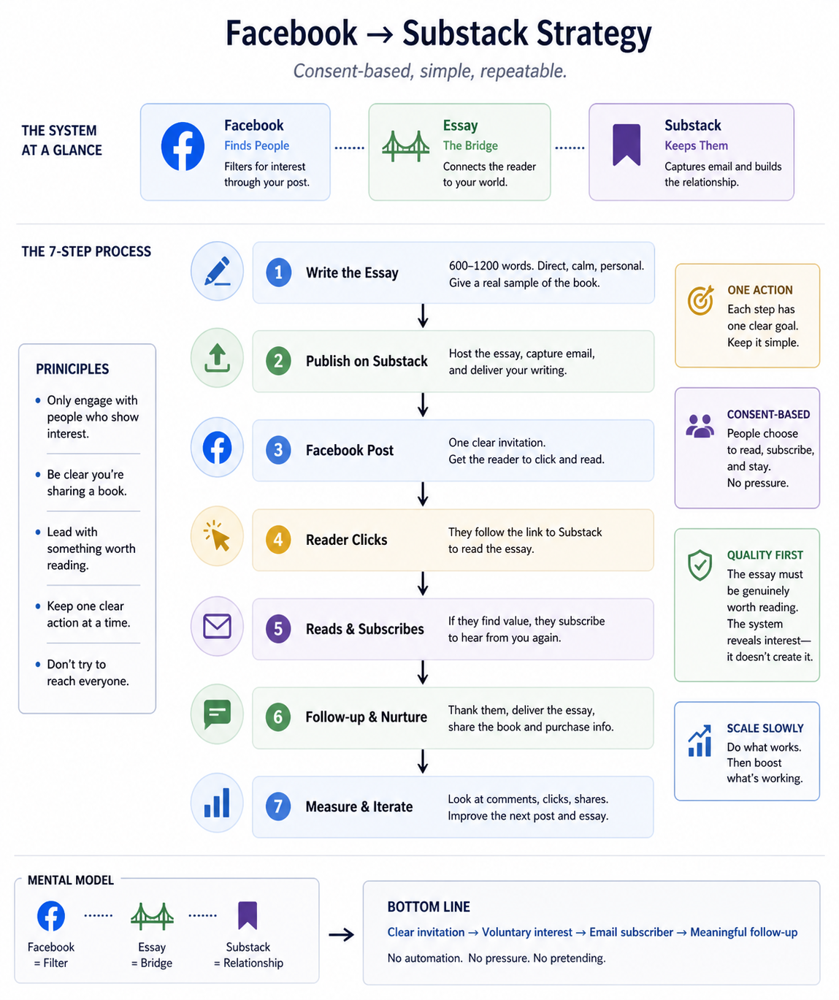

Facebook → Substack Strategy
(Consent-based, simple, repeatable)
Goal
Build a mailing list and share the book without spam, automation, or pressure.
Selling books is good, but the primary objective is to build a list of people who want to hear from you again.
Start Here
If you only do one thing:
- Write a short essay
- Post it on Facebook with a link
- Send people to Substack to read it
- Let them subscribe if they want more
That’s the system.

Core Idea
- Facebook finds people
- Substack keeps them
- The essay connects the two
Substack is where the writing lives and where the relationship is built. It hosts the essay, collects email addresses, and sends your writing directly to subscribers. Think of it as a simple combination of a blog and a mailing list in one place.
Principles
- Only engage with people who show interest
- Be clear you’re sharing a book
- Lead with something worth reading
- Keep one clear action at a time
- Don’t try to reach everyone
Step 1 — Write the Essay
Purpose: Give a real sample of the book
- 600–1200 words
- Direct, calm, personal
- No sales tone
Structure:
- Start inside a real tension (e.g., noticing you keep trying to fix something that might already be fine)
- Stay with one idea
- Let insight emerge
- End without wrapping it up
Step 2 — Publish on Substack
Use Substack as:
- Essay host
- Email capture
- Delivery system
Options:
Open (soft):
Full essay visible. Optional subscribe.
Partial gate (more pressure):
First section visible. Email required to continue.
Step 3 — Facebook Post
Goal: Get the reader to click and read the essay
Primary outcome: email subscriber
Template
I wrote a short piece from a book I’ve been working on.
It’s about [idea].
If you want to read it, it’s here:
[link]
One line only. Clear, concrete. No summaries or explanation.
Example:
I wrote a short piece from a book I’ve been working on.
It’s about how we keep trying to fix things that might already be fine.
If you want to read it, it’s here:
[link]
Do not include a purchase link in the post. Keep one action: read.
Place the purchase link after the reader has engaged — at the end of the essay or within follow-up emails. This keeps the entry simple and lets the decision to buy happen naturally.
Step 4 — Optional Outreach
Only message people you already have a natural relationship with.
Hey [Name],
I just finished a book and I’m sharing a short piece from it.
If you’re interested, I can send it over.
— [your signature]
- 10–30 per day
- Natural pacing
- Slight variation
- Stop if no response
Step 5 — Measure Response
Look for:
- Comments → strongest signal
- Clicks → interest
- Shares → resonance
Ignore vanity metrics.
Step 6 — Boosting
Only boost posts that already work.
- Wait 12–24 hours
- Boost posts with comments
- $10–30 test
A good post usually gets a few real comments and some clicks within the first day.
Purpose: extend reach, not force results.
Step 7 — After Someone Subscribes
- Thank them for subscribing
- Provide the essay link
- Share the book title and purchase information (including links)
Keep it brief and direct.
Mental Model
- Facebook = filter
- Substack = relationship
- Essay = bridge
Bottom Line
Clear invitation → voluntary interest → email subscriber → meaningful follow-up
No automation. No pressure. No pretending.
Constraint
This only works if the essay is genuinely worth reading.
The system reveals interest — it doesn’t create it.